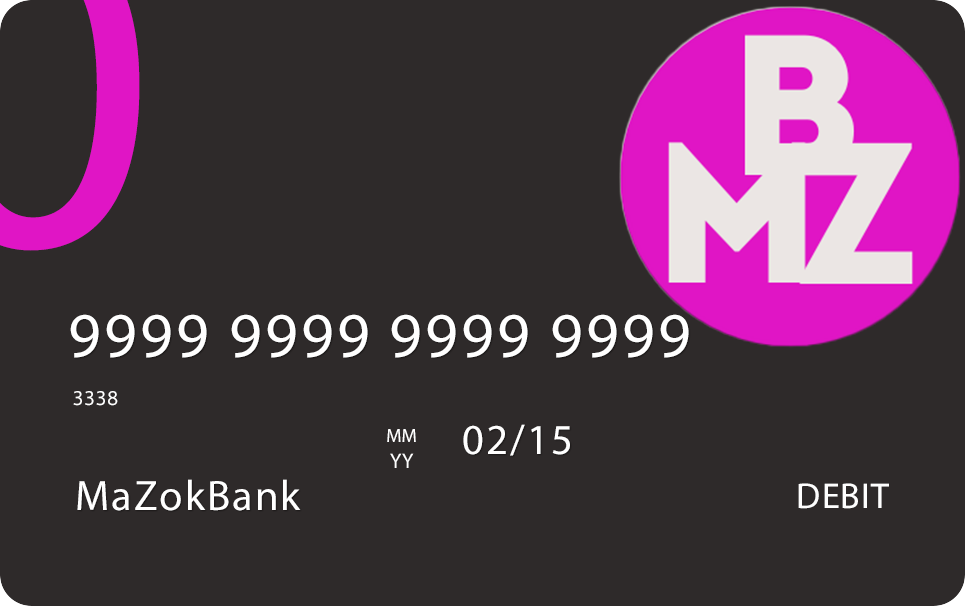
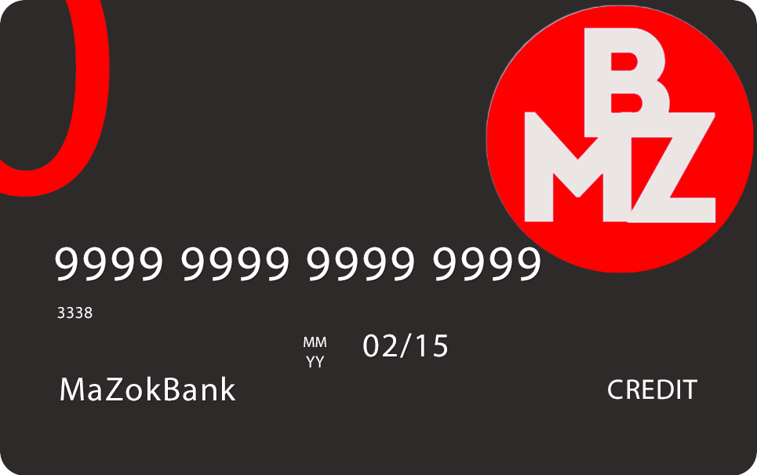

- Дебітова карта дозволяє здійснювати безготівкові покупки та зняття готівки з банкоматів.
- За допомогою дебітової карти можна проводити оплату у магазинах, ресторанах, та інших закладах, які приймають безготівкові платежі.
- Картка зазвичай пов'язана з банківським рахунком, з якого знімаються кошти під час покупок або зняття готівки.
- Користувач може перевіряти залишок на рахунку та історію транзакцій через мобільний додаток або онлайн-банкінг.
- Дебітова карта може мати різноманітні функції захисту, такі як PIN-код, технологія чіпа та контактного зчитування, а також можливість блокування чи скасування у разі втрати або крадіжки.
- Картка також може мати додаткові функції, такі як безконтактний платіж, програми лояльності або страхування покупок.

Можна відмовитися від кредиту протягом 14 днів без пояснення причин.
Заборонено вимагати покупку товарів або послуг від банку або пов'язаних осіб, крім пакету банківських послуг.
Зміни до угоди можуть бути зроблені за згодою сторін, відповідно до правил банківських послуг.
Можливість відмови від отримання рекламних матеріалів через дистанційні канали.
Мінімальний строк кредиту не встановлено, а максимальний - 20 років.

Картка Юніора для дітей від 6 до 17 років
Можливість контролювати витрати дитини.
Сервіс грошового заохочення «Зробив – заробив» для вашої дитини в карті MaZokBank Junior.
Безкоштовне навчання в школі фінансової грамотності.
Переваги Картки Юніора для батьків
Контроль усіх витрат дитини за допомогою інформування або у виписці за карткою .
Швидке та зручне поповнення Картки Юніора в будь-який час, термінали самообслуговування або регулярним платежем.
Можливість оплати в магазинах – дитина ніколи не залишиться голодною.
Безпека зберігання грошей – блокування картки в разі втрати та збереження коштів у повному обсязі.
Встановлення ліміту на зняття коштів – дитина не витратить більше коштів, ніж ви хочете.
Зручність платежів: за допомогою картки можна поповнити рахунок мобільного телефону, оплатити товари та послуги в Інтернеті.
Користуючись Карткою Юніора, дитина вчиться заощаджувати свої гроші, керувати ними та може брати участь у захопливих конкурсах.